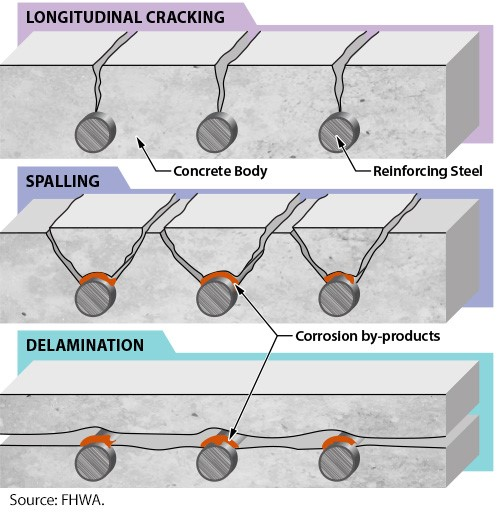
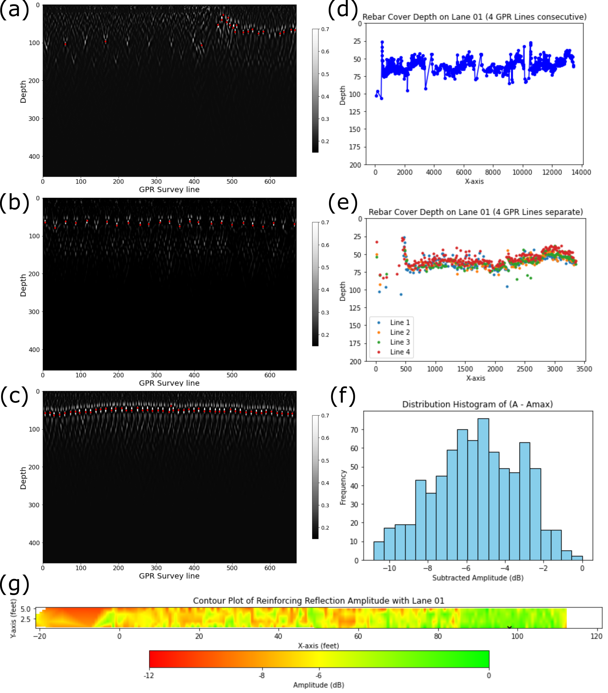
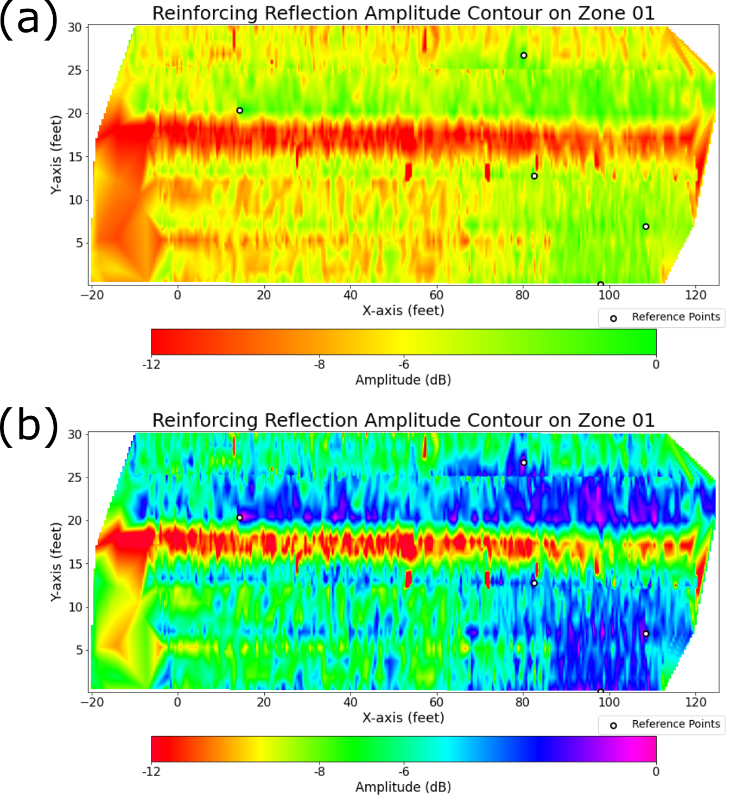
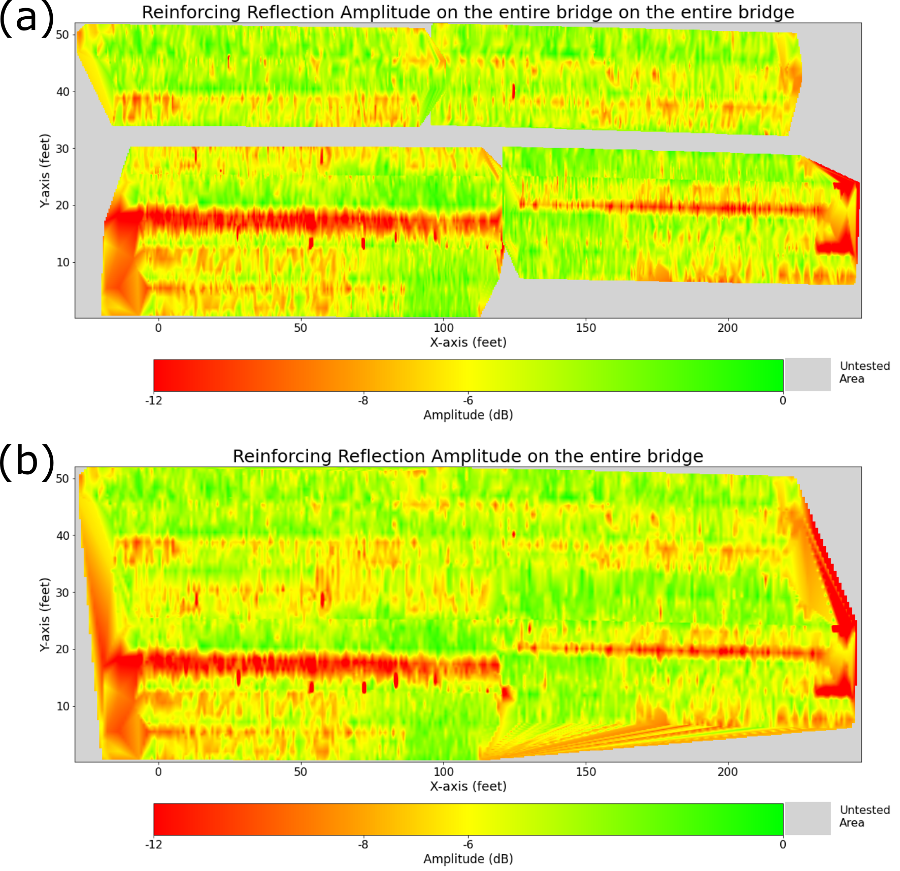
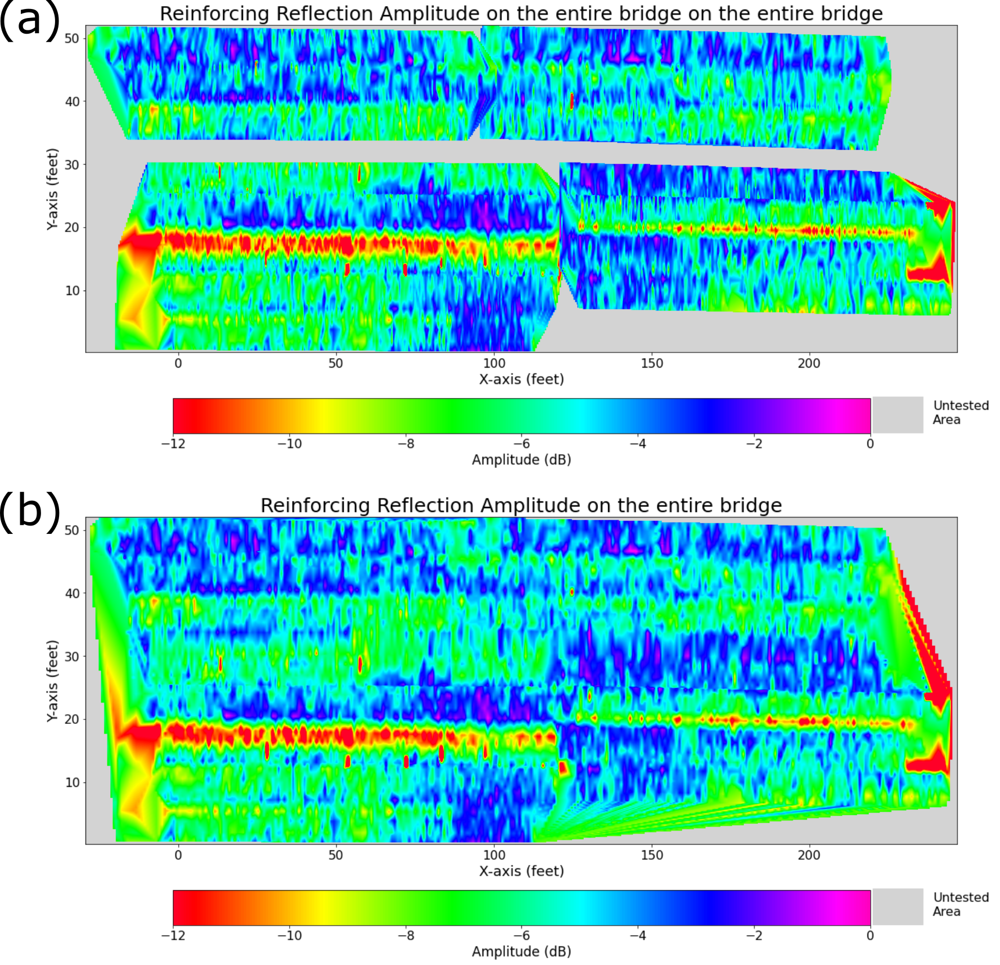

Introduction to Reinforcement Corrosion
Corrosion is an electrochemical process that converts a metal into a more thermodynamically stable oxide. The rust (Fe2O3·xH2O) on steel (Fe) is one of the most common examples of a corrosion byproduct. The presence of water is crucial for this process, as it allows the oxygen to react with the electrons on the surface of the steel. The electrochemical process always includes two chemical reactions: oxidation and reduction. Oxidation is the loss of electrons, while reduction is the gain of electrons.
Oxidation of Steel: 2Fe → 4e- + 2Fe2+
Reduction of Water: 4e- + 2H2O + O2 → 4OH-
Steel/water interface: 2Fe2+ + 4OH- → 2Fe(OH)2 → Fe2O3·xH2O
In a concrete bridge, the rebars are surrounded by concrete. If the concrete is soaked with ions (mostly chloride ions), corrosion can occur on the rebar surface. The rebars (steel) form a crystal structure (Base Centered Cubic), and when corrosion occurs, the molecular arrangement changes due to the formation of the corrosion byproduct, which occupies more space than refined steel. This causes pressure on the surrounding concrete, resulting in cracks. Figure 1 shows the type of crack in a concrete bridge due to corrosion. Figure 2 displays the bridge deck specimen located at Turner Fairbank Highway Research Center (TFHRC), showing actual delamination along the rebars due to the corrosive environment.
{kind=link}
Figure 1. Type of crack on the concrete bridge due to the corrosion.

Figure 2. Bridge deck sample located at TFHRC. The right figure shows delamination along the rebars due to the corrosion.
GPR uses electromagnetic (EM) wave to investigate below the surface. Since EM waves travel at different speeds at different media (the wave speed is slower in higher dielectric, and faster in lower dielectric media), GPR is widely accepted for identifying concrete’s corrosive environment. (Dinh et al., 2017; Faris et al., 2023; Imperatore & Rinaldi, 2019; Solla et al., 2019) Specifically, the GPR signal on corrosive area tend to be attenuated compared to the healthy rebar, because the presence of cracks or corrosion byproducts cause the scattering of GPR signals. (Tešić et al., 2021; Zaki et al., 2018) However, some researches have shown that the signal can be enhanced when the cracking is longitudinal and specific type of corrosion byproduct is stacked along with the crack direction. (Hong et al., 2022) Here we exclude these uncommon cases and consider a general corrosive environment or delamination cases.
We follow the ASTM D6087 standard method, “Standard Test Method for Evaluating Asphalt-Covered Concrete Bridge Decks Using Ground Penetrating Radar”. (ASTM International, 2022) In this procedure, the reflection amplitudes among rebars are compared to assess their condition. The assessment is done on a logarithmic scale, where the amplitude differences among the rebar signals are calculated relative to the rebar with the highest reflection amplitude, considered the healthy rebar.
The reflection amplitudes are converted to a logarithmic scale using the following equation:
\(A_{dB} = 20 \log_{10}(A)\),
where \(A_{dB}\) is the reflection amplitude in decibels, and \(A\) is the reinforcing reflection amplitude in data units. After converting the GPR signals to decibels, we subtract each signal’s amplitude from the maximum decibel value among all signals. These subtracted values are then displayed as contour maps on the bridge deck. Locations where the signal is below -6 to -8 dB are suspected to be under corrosive environments. (ASTM International, 2022)
To achieve our objective, first we need to identify the rebars from GPR B-scan data. Secondly, list all the amplitudes according with the coordinates. Then convert them into decibel scales, and lastly subtract all the decibels from the maximum value to plot the 2D contour map.
Objectives of the Case Study
This case study aims to provide a Python-based solution to processing GPR data for assessing corrosion on rebars of the concrete bridges and output 2D amplitude contour plots. It will give a high-level summarized report, followed by a detailed explanation about how we processed the data. Here we leverage actual GPR data from the concrete bridge located at Mississippi I-10. The NDE data is downloadable at FHWA LTBP InfoBridge™.

Prerequisites
Readers are redirected to the USING CHARISMA section to install the CHARISMA environment. For the transparency, we convert the data format from DZT to CSV. This part is explained in the Open Data section.
The detailed data information is available in our Cover Depth Measurement case study, by clicking the following link: Prerequisites.
Corrosion Assessment Results
Executing our code along with proper input variables, it automatically outputs interpolated rebar signal amplitudes in decibel unit. Figure 3 (a), (b), and (c) shows the pinpointed rebar signals on the split GPR B-scans. Our code reads the absolute amplitude values right on the rebar signals, save as a list. Subsequently, the code concatenates the split B-scans and generates 2D scatter plots for the entire data and splits the concatenated B-scans again to plot the 2D scatter plots along the actual four GPR scan lines (Figure 3 (d) and (e)). To check how the rebar signal amplitudes vary, we also output the amplitude distribution histogram on each lane (4 GPR lines), shown in Figure 3 (f). Lastly, the code outputs the interpolated amplitude contour for each lane (Figure 3 (g)).
{kind=link}
Figure 3. CHARISMA outputs from Mississippi I-10 Region 01 rebar cover depth for the first 4 GPR scan lines. Figure 3 (a), (b), and (c) are the rebar mapping result (3 examples among 20 split B-scans), (d) and (e) show the rebar coordinates, (f) displays the rebar amplitude distribution histogram, and (g) exhibits the interpolated 2D contour map.
Figure 4 shows the output of processing GPR data with CHARISMA, which is the interpolated 2D contour from the entire lanes in the bridge Zone 01. Figure 4 (a) follows the ASTM standard, stating the rebar signals below -6 or -8 dB is suspected to be under corrosive environment. Figure 4 (b) is a rainbow contour map, which is also used in LTBP InfoBridge™. We repeat this process for the other zones to gather all the rebar points on the entire bridge.
{kind=link}
Figure 4. Interpolated reinforcing reflection amplitude 2D contour from the entire lanes in the bridge Zone 01. (a) follows the ASTM standard and (b) uses rainbow contour map. The black circle shows the reference points that have the maximum amplitude among each lane.
Once we have obtained the rebar points from all regions, CHARISMA generates the rebar cover depth contour map for the entire bridge. It combines all the rebar point lists from individual regions and establishes a grid space based on the XML file. For each colormap (ASTM and rainbow), There are two options available: one involves plotting without interpolating the gap among regions (Figure 5 and 6 (a)), while the other interpolates the entire bridge based on the gathered rebar points (Figure 5 and 6 (b)). Since we use the linear interpolation method, there is no available value for the edges, which is shown in grey color.
{kind=link}
Figure 5. CHARISMA output (ASTM style): 2D contour plot of reinforcing reflection amplitude on Mississippi I-10 concrete bridge without interpolating the gap among regions (a), and with interpolating the entire bridge (b).
{kind=link}
Figure 6. CHARISMA output (Rainbow colormap): 2D contour plot of reinforcing reflection amplitude on Mississippi I-10 concrete bridge without interpolating the gap among regions (a), and with interpolating the entire bridge (b).
Discussion
How do we use CHARISMA to solve the problem?
CHARISMA successfully measured the reinforcing reflection amplitude on the concrete bridge at Mississippi I-10 to assess its corrosive environment. Our approach begins by leveraging the XML file containing the actual GPR scan coordinates to correlate with the GPR data. Then, we process GPR data based on the raw data analysis, pinpoint rebar coordinates with the K-means clustering algorithm, and concatenate all the rebar points from different regions with the offset correction. Finally, we interpolate the points to populate the grid space, ensuring it matches the dimensions of the bridge. All the details are organized in Code Explanation section.
What limitations have been reminded of?
Our corrosion assessment method shares the same limitations as the Cover Depth Measurement because the code algorithms are largely the same. While the F-K migration and K-means clustering algorithms produce reasonable results, they are not robust and are difficult to automate for data processing. For more details, readers are encouraged to refer to the Discussion section of the Cover Depth Measurement case study.
Additionally, the amplitude map is not depth-corrected. In principle, the signal attenuates more as the wave propagates deeper, resulting in weaker amplitudes for deeper rebars. This means our current methodology may struggle to distinguish between corrosive rebars and deep rebars. Several researchers suggest correcting the signal amplitude for depth using the attenuation equation, but there are multiple methods for this correction, and no standard approach has been established. Furthermore, the rebar depths in a bridge are relatively similar, so depth correction may not make a significant difference.
Comprehensively, this approach still requires manual raw data analysis and setting appropriate parameters for code input, indicating that the code is not fully automated to get the result. Our focus currently lies on utilizing machine learning tools to locate rebars without relying on migration or the K-means clustering algorithm, aiming for complete automation of the corrosion assessment.
Jupyter Notebook – Mississippi Bridge
We provide our Jupyter notebook to show how the code is utilized to get the results. Clicking the image below will redirect you to our notebook on CHARISMA’s GitHub page.
Code Explanation
The code algorithm is very similar to that used for Cover Depth Measurement. For cover depth, we first locate the rebars on the GPR B-scans and measure the distance between the surface of the rebars and the surface of the concrete. For corrosion, we locate the rebars and measure the rebar signal amplitude. Therefore, the code function used for corrosion assessment is mostly the same. However, the cover depth code processes the data in inches, while the corrosion code does not convert the units and processes the data as is. This difference arises from the distinct objectives: cover depth measures the distance, whereas corrosion measures the amplitude at specific coordinates.
For this reason, readers are directed to Code Explanation section from the Cover Depth Measurement, as the input parameters for the code are identical. We will also compare the two applications, highlighting the differences in the code.
Corrosion Assessment Details
We first process the GPR B-scans with time-zero correction, background removal, F-K migration, and contrast adjustment. In accordance with the ASTM standards, we use the migrated data without any visual modifications (as contrast adjustment can alter the amplitude and affect the decibel values) to obtain the amplitude signals on the rebars.
After mapping the rebars (unitless) with the migrated data, we create a Pandas dataframe to process further, as shown in Figure 7. In the dataframe, the rebar coordinate x represents the GPR survey line, and y represents the wave travel time. Since the rebar coordinates are not integers (the data is discrete and the amplitude between two data points is unknown), we use the SciPy interp2d function to determine the amplitude at the exact points. Then, we convert the amplitude to a logarithmic scale in decibels and subtract it from the maximum dB value.
{kind=link}
Figure 7. (a) table is an output from the extract_reinforcing_reflection_amplitude function, the first 20 rows in corrosion assessment data processing and the rows with the maximum amplitude. (b) shows the rebar points (red line) on the GPR a-scans to check whether the interpolation works correctly or not.